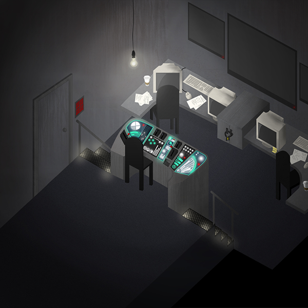
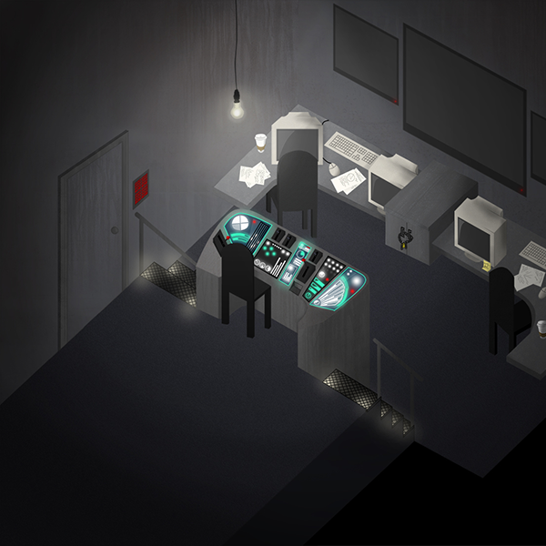

project | Concept Art
purpose | Concept art is a field I am extremely interested in, which is why I am involved in this collaboration. I am the only concept artist, and complete all pieces individually.
tools | Pencil + paper, Adobe Photoshop CS4 + CS6
skills + concepts | Digital colouring, industrial + perspective drawing skills, shading, textures.
 

{kind=link}
{kind=link}
This game project is a collaboration outside of school with other students who are similarly looking to gain experience in their respective fields. Being the sole concept artist, it is my job to take the level descriptions provided to me by the developers and create a piece that will illustrate the “look & feel” of these game environments for the animators, 3D modelers, texture artists, and so on to work from.
Thus far, the pieces have been of manmade, industrial objects & perspective drawings. Before this project, these subjects were entirely out of my comfort zone - but after a lot of practice and trial & error, I’m very pleased with how my skills have progressed.
With the control room (middle image), for example, I had to detail everything from the lighting & shadows to the texture on the walls to achieve the creepy and dirty, yet high-tech, look I was aiming for. So far my work has gotten very positive feedback and I have many more pieces lined up for the near future.